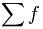
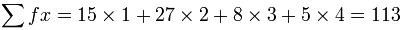
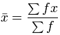

The Mean from a Frequency Table
It is easy to calculate the Mean:
Add up all the numbers,
then divide by how many numbers there are.
Example: What is the Mean of these numbers?
6, 11, 7
- Add the numbers: 6 + 11 + 7 = 24
- Divide by how many numbers (there are 3 numbers): 24 ÷ 3 = 8
The Mean is 8
But sometimes we don't have a simple list of numbers, it might be a frequency table like this (the "frequency" says how often they occur):
| Score | Frequency |
|---|---|
| 1 | 2 |
| 2 | 5 |
| 3 | 4 |
| 4 | 2 |
| 5 | 1 |
(it says that score 1 occurred 2 times, score 2 occurred 5 times, etc)
We could list all the numbers like this:
Mean = 1+1 + 2+2+2+2+2 + 3+3+3+3 + 4+4 + 5(how many numbers)
But rather than do lots of adds (like 3+3+3+3) it is easier to use multiplication:
Mean = 2×1 + 5×2 + 4×3 + 2×4 + 1×5 (how many numbers)
And rather than count how many numbers there are, we can add up the frequencies:
Mean = 2×1 + 5×2 + 4×3 + 2×4 + 1×5 2 + 5 + 4 + 2 + 1
And now we calculate:
Mean =
2 + 10 + 12 + 8 + 5
14
= 3714
= 2.64...
And that is how to calculate the mean from a frequency table!
Here is another example:
Example: Parking Spaces per House in Hampton Street
Isabella went up and down the street to find out how many parking spaces each house has. Here are her results:
| Parking Spaces |
Frequency |
|---|---|
| 1 | 15 |
| 2 | 27 |
| 3 | 8 |
| 4 | 5 |
What is the mean number of Parking Spaces?
Answer:
The Mean is 2.05 (to 2 decimal places)
(much easier than adding all numbers separately!)
Notation
Now you know how to do it, let's do that last example again, but using formulas.
| This symbol (called Sigma) means
"sum up" (read more at Sigma Notation) |
So we can say "add up all frequencies" this way:

(where f is frequency)
And we can use it like this:

Likewise we can add up "frequency times score" this way:

(where f is frequency and x is the matching score)
And the formula for calculating the mean from a frequency table is:

The x with the bar on top says "the mean of x"
So now we are ready to do our example above, but with correct notation.
Example: Calculate the Mean of this Frequency Table
| x | f |
|---|---|
| 1 | 15 |
| 2 | 27 |
| 3 | 8 |
| 4 | 5 |
And here it is:
x = ΣfxΣf = 15×1 + 27×2 + 8×3 + 5×415+27+8+5
= 2.05...
There you go! You can use sigma notation.
Calculate in the Table
It is often better to do the calculations in the table.
Example: (continued)
From the previous example, calculate f × x in the right-hand column and then do totals:
| x | f | fx |
|---|---|---|
| 1 | 15 | 15 |
| 2 | 27 | 54 |
| 3 | 8 | 24 |
| 4 | 5 | 20 |
| TOTALS: | 55 | 113 |
And the Mean is then easy:
Mean = 11355 = 2.05...